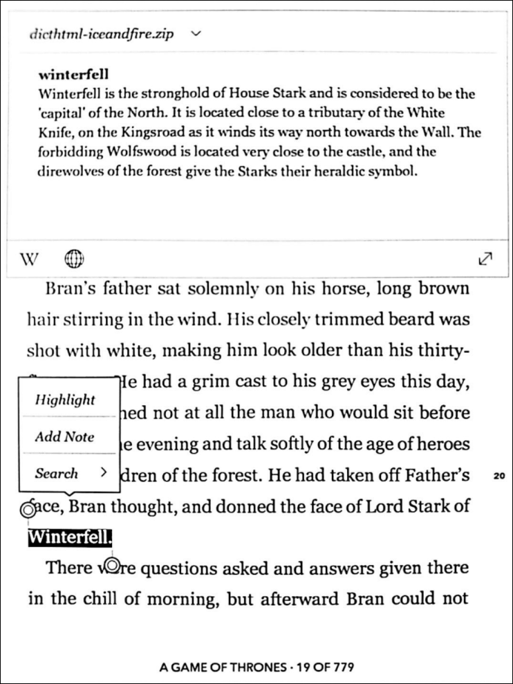

runik
(ˈrü-nik)a cross platform desktop app for generating and managing custom e-reader dictionaries.
Download learn moreEnhance your reading experience!
Stay immersed in your story with in-text definitions of fictional items, characters, and locations.

How it works
- Enter the link to a wiki that contains info about the book or series you’re reading.
- Each page of the wiki is processed and turned into a lexicon definitions specific to your book.
- Runik converts the dictionary to the correct format and loads it onto your e-reader.
- Kick back and enjoy reading your book with in-text definitions.
Smaug
Smaug was a fire-drake of the Third Age, considered the last "great" dragon of Middle-earth. He was drawn to the enormous wealth amassed by the Dwarves of the Lonely Mountain during King Thrór's reign.
Then Smaug really did laugh—a devastating sound which shook Bilbo to the floor, while far up in the tunnel the dwarves huddled together and imagined that the hobbit had come to a sudden and a nasty end. “Revenge!” he snorted, and the light of his eyes lit the hall from floor to ceiling like scarlet lightning.